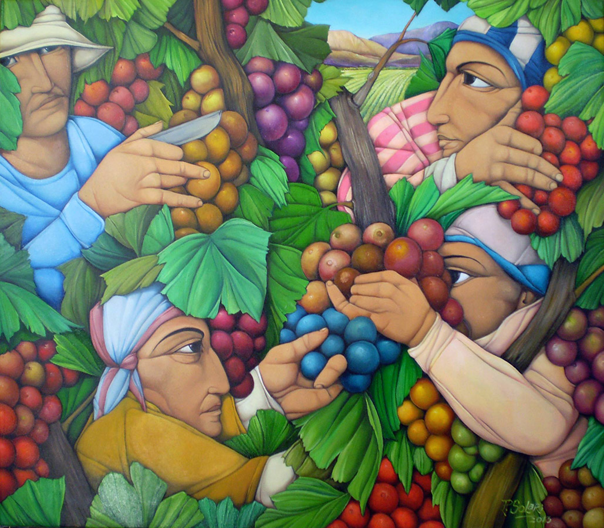
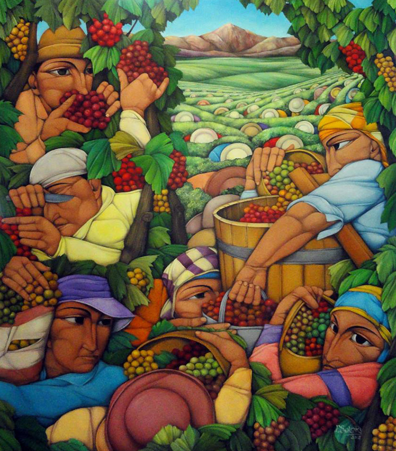
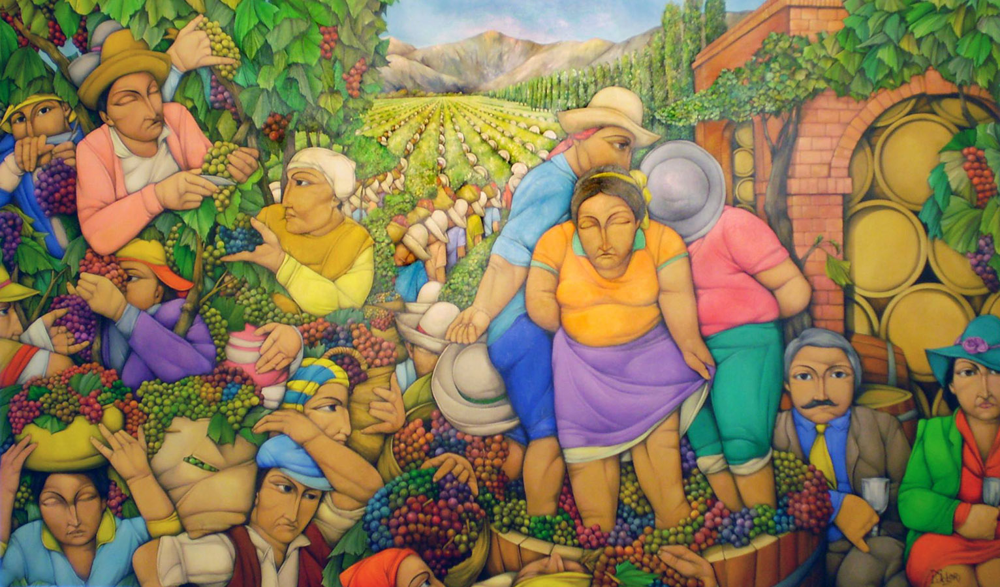
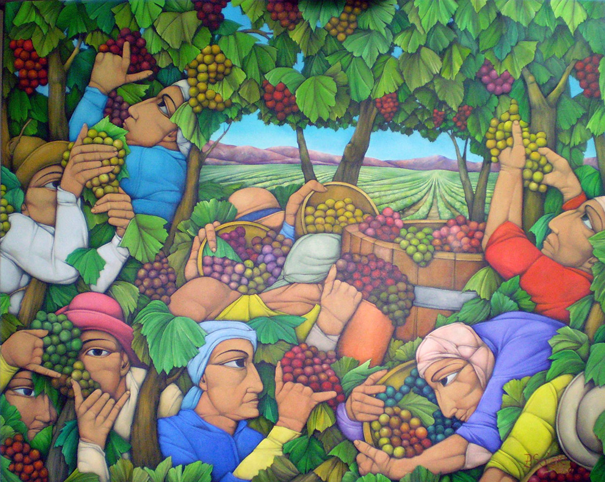
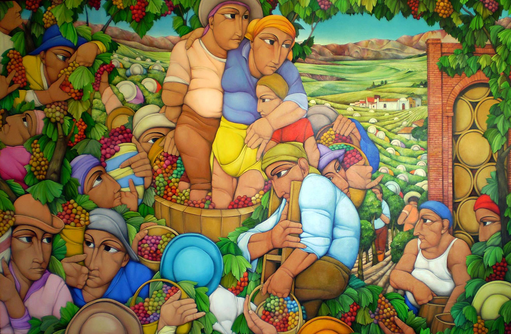

In the vineyards of Argentina, where the Andes cast long shadows over Mendoza's slopes, an artist named Pablo Solari has spent decades painting the same scene: the vendimia, the grape harvest.
But these are not paintings of vineyards. They are paintings of transformation.
Look closely and you will notice something strange — the workers do not stand among the vines. They emerge from them. Heads rise between clusters like fruit not yet picked. Arms reach through leaves as if the human body and the grapevine share the same root system. There is no boundary between the one who tends and the one who grows.
The vine doesn't know where it ends and the hands begin.


Solari trained himself by studying the Italian masters — Giotto, Fra Angelico, Michelangelo — but what he paints belongs to another tradition entirely. This is Latin American muralism: the dignity of labor made monumental, the collective body given the weight of myth. No single hero. No romantic figure surveying the land. Just hands, dozens of hands, doing what hands have done since wine began.

The faces are solemn. Not suffering, but not celebrating either. This is work — sacred, repetitive, ancient work. The kind that doesn't ask for recognition but without which there would be no glass to raise, no toast to give, no wine to remember.


In one painting, we see the full arc: on the left, workers bent among the vines; in the distance, the valley stretching toward the bodega; on the right, brick arches sheltering rows of barrels. And in the foreground, three figures lean against each other, spent after a long day. A woman in orange. A woman in pink. An older man with a mustache, sitting in silence.
This is not the romantic harvest of wine labels and tourism brochures. This is labor — the kind that breaks your back and stains your hands, the kind that transforms raw fruit into something sacred through sheer human will and repetition.

And perhaps that is what Solari is really painting: memory. The memory the wine carries but cannot speak. The bodies it passed through before it reached you.
Before the glass, there were hands. Before the cellar, there was sun. Before the bottle, there was this — a hundred bodies becoming the vine.

The next time you hold a glass, ask yourself — whose hands are still inside it?